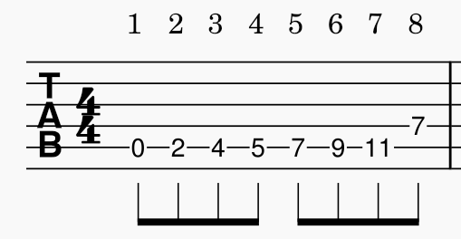
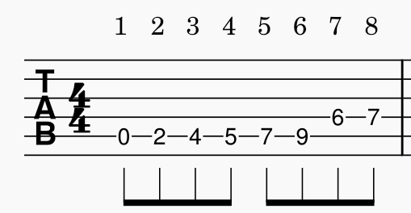
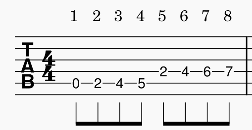
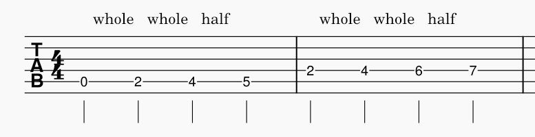
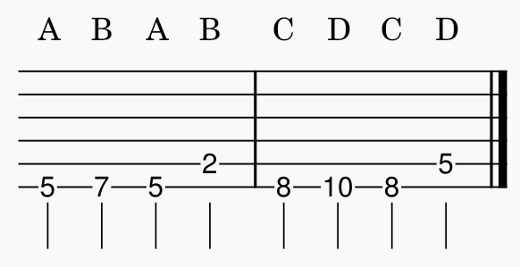

Now that we're comfortable with the major scale on a single string and can play/improvise with songs in any arbitrary key, we can start to learn a bit about how to make the scale more efficient by putting the notes on different strings, to minimize position changes (moving up and down the neck versus moving between strings).
First, do a scale run (ascend then descend the scale) of the A-major scale with the root on the open A-string. Then, find the note A on the D string; this will be your new octave. You'll play all of the other degrees in the same place except for the octave, which will be played on the D string. Play the below shape ascending and descending multiple times, reciting the degrees as you go. Repeat this process for the following shapes as well, but become comfortable with the movements before moving on to the next.

Now do the same for the 7th degree. Remember that the distance from the 6th to 7th degree is a whole-step, and notice that the distance between those degrees between strings is three frets.

Same for the 6th degree. Notice that three fret difference again.
And finally the 5th. Again, three frets.

Now that we have this shape, we can look at it and notice that between the two strings, the same pattern of whole-step, whole-step, half-step is apparent.

The distance between the 4th and 5th, the 5th and 6th, and the 6th and 7th are all whole-steps. Thus, we can now see that a whole-step, when going to the next string, is as simple as going down three frets, as seen below.

Memorize this pattern, as this will be extremely useful to you in the long run.
In order to fully use this pattern and be able to use it in our improv, technique exercises, and ear training, we need to become very comfortable with it and all of the notes' relationships to one another. Practice it in the same ways as you have for your single string shape, whether by playing over a track with it or by creating exercises (like those listed below) while active listening. Always seek to master the small things you learn before moving on too far, rather than have a basic grasp on a topic/pattern and continuously add to a pile of things barely-practiced. You will not know everything there is to know about music, but you can be extremely proficient and consistent with the things you do know, and it will make learning new things based on those topics/techniques much easier.